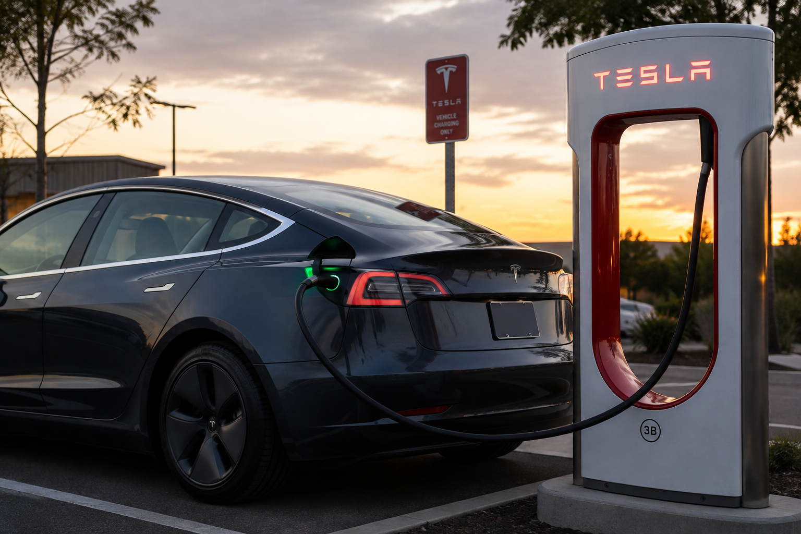

Globalização
Entenda como diferentes países participam da produção dos carros elétricos.
Uma análise da trajetória global dos carros elétricos, seus impactos e as possibilidades para um futuro mais sustentável.
Começar Apresentação
Entenda como diferentes países participam da produção dos carros elétricos.
Conheça as principais tecnologias presentes nos veículos elétricos.
Veja os impactos e as possíveis soluções para tornar esse setor mais sustentável.